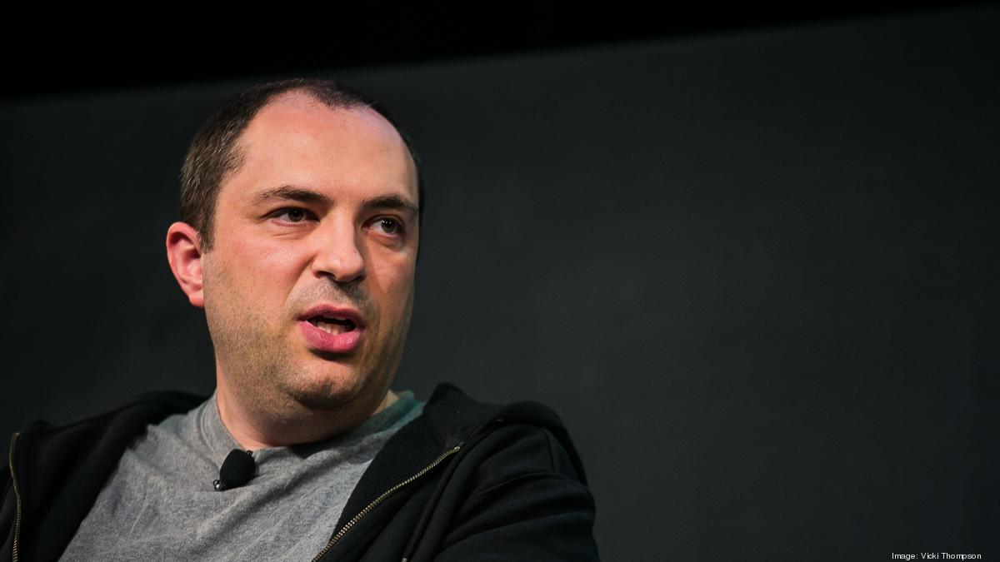

back home
youtube
WhatsApp

- about whatsapp
-
WhatsApp is a free cross-platform messaging service. It lets users of
iPhone and Android smartphones and Mac and Windows PC call and exchange
text, photo, audio and video messages with others across the globe for
free, regardless of the recipient's device.

- Jan Koum and Brian action
-
WhatsApp was founded by Jan Koum and Brian Acton who had previously
spent 20 years combined at Yahoo. WhatsApp joined Facebook in 2014, but
continues to operate as a separate app with a laser focus on building a
messaging service that works fast and reliably anywhere in the world.
whatsapp wekipedia
whatsapp
WhatsApp (also called WhatsApp Messenger) is a freeware, cross-platform,
centralized instant messaging (IM) and voice-over-IP (VoIP) service owned
by United States tech conglomerate Meta Platforms.[14] It allows users to
send text, voice messages and video messages, [15] make voice and video
calls, and share images, documents, user locations, and other
content.[16][17] WhatsApp's client application runs on mobile devices, and
can be accessed from computers.[18] The service requires a cellular mobile
telephone number to sign up.[19] In January 2018, WhatsApp released a
standalone business app called WhatsApp Business which can communicate
with the standard WhatsApp client.[20][21] The service was created by
WhatsApp Inc. of Mountain View, California, which was acquired by Facebook
in February 2014 for approximately US$19.3 billion.[22][23] It became the
world's most popular messaging application by 2015,[24][25] and had more
than 2 billion users worldwide by February 2020.[26] By 2016, it had
become the primary means of Internet communication in regions including
Latin America, the Indian subcontinent, and large parts of Europe and
Africa.[24] History For a chronological guide, see Timeline of WhatsApp.
WhatsApp Timeline Feb 24, 2009 Jan Koum incorporates WhatsApp in
California.[27] Aug 2009 WhatsApp 2.0 is released on the App Store for the
iPhone.[28] Oct 2009 Brian Acton persuades five ex-Yahoo! friends to
invest $250,000 in seed funding, and is granted co-founder status.[27] Aug
2010 WhatsApp support for Android OS is added.[29] Jan 21, 2011 WeChat, a
messenger app, is founded.[30] It eventually starts to compete with
WhatsApp and becomes very popular in China. Apr 2011 In Series A round,
WhatsApp founders agree to take $7 million from Sequoia Capital on top of
their $250,000 seed funding, after months of negotiation with Sequoia
partner Jim Goetz.[27] May 2011 Snapchat, a competing photo messaging app,
is founded.[31] Jan 6, 2012 An unknown hacker publishes a website that
makes it possible to change the status of an arbitrary WhatsApp user, as
long as the phone number was known.[32][33] Aug 2012 The WhatsApp support
staff announce that messages were encrypted in the "latest version" of the
WhatsApp software for iOS and Android (but not BlackBerry, Windows Phone,
and Symbian), without specifying the cryptographic method.[34] Feb 2013
WhatsApp's user base grows to about 200 million active users and its staff
to 50.[27] Jul 2013 Sequoia invests another $50 million in Series B round,
valuing WhatsApp at $1.5 billion.[35] Jul 16, 2013 WhatsApp changes its
profit model with an annual subscription fee of $1 after a free first
year.[36][37] Aug 2013 Telegram, a cloud-based instant messaging service,
launches.[38] Aug 2013 WhatsApp introduces voice messaging.[39] Feb 19,
2014 Facebook, Inc. announces its acquisition of WhatsApp for US$19
billion, its largest acquisition to date.[40] Facebook pays $4 billion in
cash, $12 billion in Facebook shares, and an additional $3 billion in
restricted stock units granted to WhatsApp's founders.[41] Mar 2014
Someone discovers a vulnerability in WhatsApp encryption on the Android
application that allows another app to access and read all of a user’s
chat conversations within it.[42] Nov 2014 WhatsApp introduces Read
Receipts, which show when a message is read by a recipient. Within a week,
WhatsApp introduces an update allowing users to disable this feature.[43]
Jan 21, 2015 WhatsApp launches WhatsApp Web, a web client which can be
used through a web browser by syncing with the mobile device's
connection.[44] Jan 21, 2015 WhatsApp announces its policy on cracking
down on 3rd-party clients, including WhatsApp+.[45] Users would not be
able to use WhatsApp’s services at all until the third-party apps are
uninstalled.[46] Dec 2015 WhatsApp is briefly shut down in Brazil after it
refuses to place wiretaps on certain WhatsApp accounts.[47] It is shut
down in Brazil again on May 2016 and in July 2016.[48] Jan 18, 2016 Jan
Koum announces that WhatsApp will no longer charge its users a $1 annual
subscription fee.[49][50] There is still no clear plan for monetizing
WhatsApp.[51] Mar 2016 Diego Dzodan, a Facebook executive, is arrested by
Brazilian federal police after Facebook fails to turn over information
from his WhatsApp messaging account into a judge's request for a drug
trafficking investigation.[52][53] Mar 2, 2016 WhatsApp introduces its
document-sharing feature, initially allowing users to share PDF files with
their contacts.[54] Apr 5, 2016 WhatsApp and Open Whisper Systems announce
that they have added end-to-end encryption to "every form of
communication" on WhatsApp, and that users could now verify each other's
keys.[55][56][57] May 10, 2016 WhatsApp is introduced for both Windows and
Mac operating systems.[58] January 2018 WhatsApp launches WhatsApp
Business, a platform for small enterprises where they can connect with
customers.[59] April 2018 WhatsApp co-founder and CEO Jan Koum announces
he’s leaving the company after clashes with Facebook, saying “I sold my
users’ privacy”.[60] September 2018 WhatsApp launches group audio and
video calls.[61] vte 2009–2014 WhatsApp was founded in February 2009 by
Brian Acton and Jan Koum, former employees of Yahoo!. In January 2009,
after Koum purchased an iPhone, he and Acton decided to create an app for
the App Store. The idea started off as an app that would display statuses
in a phone's Contacts menu - showing if a person was at work or on a
call.[62] Their discussions often took place at the home of Koum's Russian
friend Alex Fishman in West San Jose. They realized that to take the idea
further, they would need an iPhone developer. Fishman visited
RentACoder.com, found Russian developer Igor Solomennikov, and introduced
him to Koum.[62] Koum named the app WhatsApp to sound like "what's up". On
February 24, 2009, he incorporated[63] WhatsApp Inc. in California.
However, when early versions of WhatsApp kept crashing, Koum considered
giving up and looking for a new job. Acton encouraged him to wait for a
"few more months".[62] In June 2009, when the app had been downloaded by
only a handful of Fishman's Russian-speaking friends, Apple launched push
notifications, allowing users to be pinged even when not using the app.
Koum updated WhatsApp so that everyone in the user's network would be
notified when a user's status changed. This new facility, to Koum's
surprise, was used by users to ping "each other with jokey custom statuses
like, ‘I woke up late’ or ‘I'm on my way.’"[62] Fishman said "At some
point it sort of became instant messaging".[62] WhatsApp 2.0 was released
in August 2009 with a purpose-designed messaging component; the number of
active users suddenly increased to 250,000. Although Acton was working on
another startup idea, he decided to join the company.[27] In October 2009,
Acton persuaded five former friends at Yahoo! to invest $250,000 in seed
funding, and Acton became a co-founder and was given a stake. He
officially joined WhatsApp on November 1.[27] After months at beta stage,
the application launched in November 2009 on the App Store, exclusively
for the iPhone. Koum then hired a friend in Los Angeles, Chris Peiffer, to
develop a BlackBerry version, which arrived two months later.[27]
Subsequently, WhatsApp for Symbian OS was added in May 2010, and for
Android OS in August 2010.[64] In 2010 Google made multiple acquisition
offers for WhatsApp, which were all declined.[65] To cover the cost of
sending verification texts to users, WhatsApp was changed from a free
service to a paid one. In December 2009, the ability to send photos was
added to the iOS version. By early 2011, WhatsApp was one of the top 20
apps in the U.S. Apple App Store.[27] In April 2011, Sequoia Capital
invested about $8 million for more than 15% of the company, after months
of negotiation by Sequoia partner Jim Goetz.[66][67][68] By February 2013,
WhatsApp had about 200 million active users and 50 staff members. Sequoia
invested another $50 million, and WhatsApp was valued at $1.5 billion.[27]
Some time in 2013[69] WhatsApp acquired Santa Clara-based startup
SkyMobius, the developers of Vtok,[70] a video and voice calling app.[71]
In a December 2013 blog post, WhatsApp claimed that 400 million active
users used the service each month.[72] The year 2013 ended with $148
million in expenses, of which $138 million in losses.[73]